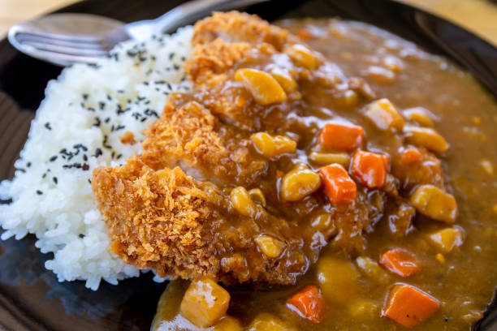

Japanese Curry

Description
Here is an image of an amazing recipe I learned from my friend's dad. He was a chef in Japan, and decided to make a new life in America. This has been passed down to me.
Ingredients
- Curry Roux
- Protein (Chicken is best)
- Onions
- Carrots
- Potatos
- Half of an apple
- Ketchup
- Honey (optional)
Steps
- Prep ingredients by cutting into 1/2 in squares (needs to be large enough to not dissolve, but small enough to eat)
- satee ingredients in the following order: Carrots, Potatos, Onions, then protein
- Add recommended amount of water to sateed ingredients and heat till boiling
- Add curry roux, make sure to dissolve the roux completely
- Turn down to medium heat and add diced apples
- Enjoy!